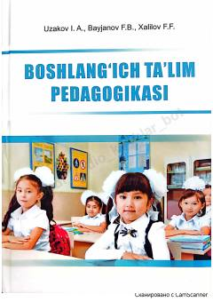

BTBoshlang'ich ta'lim yo'nalishi talabalari uchun mo'ljallangan pedagogika fanidan darslik.
Ushbu darslik boshlang'ich ta'lim yo'nalishi talabalari uchun mo'ljallangan bo'lib, unda pedagogikaning nazariy asoslari, zamonaviy ta'lim texnologiyalari va o'qitish metodlari yoritilgan. Shuningdek, kitobda boshlang'ich ta'limning tarixiy rivojlanishi, tarbiya jarayonlari va o'quvchilarni baholash tizimi haqida batafsil ma'lumotlar keltirilgan.